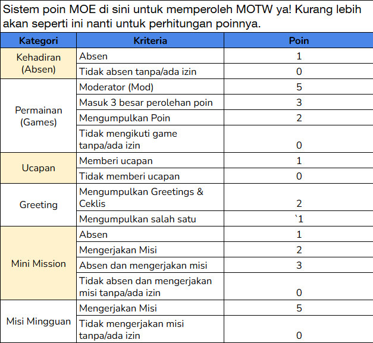

1. Kalau boleh tau MOE akan berjalan berapa lama?
Kemungkinan MOE akan berjalan selama 35 hari ya.
Kemungkinan MOE akan berjalan selama 35 hari ya.
Untuk kriteria dari Memoirs,
kami sendiri sudah berdiskusi dan
kira-kira seperti ini ya kriterianya:
Form: 45%
Interaksi dengan Base: 20%
Keaktifan Akun Pribadi: 25%
Promosi: 10%
Total: 100%
Kami sangat mengutamakan isi form Moe-Lovers k
arena ingin lebih mengenal diri kalian secara
personal sebagai salah satu bentuk komitmen
dengan kami. Untuk kriteria yang lain tak
kalah pentingnya. Bagaimana interaksi
kalian di dengan kami, interkasi kalian
dengan teman, dan mempromosikan MOE ke publik.
Selain itu, kami juga sangan terbuka dengan face
clain yang sama seperti memoirs ya.
Karena kami sendiri suka dengan twins kami.
Untuk penilaian kepads Moe-Lovers yang face
claim sama kami kembalikan pada kriteria yang
sudah kami sebut🥺
Tentu!
Untuk mission tiap week kami sudah
menyiapkan semua temanya sesuai dengan
konsep dasar Moe. Konsep kami tidak hanya t
entang galau, tapi kami akan bawa kamu
ke kenangan hubungan dahulu.
Fase mengenal, pendeketan, jatuh cinta,
perubahan perasaan, kekecewaan dan kesakitan,
sampai kamu di titik mengikhlaskan apa yang
terjadi di masalalu dan mencoba memahami bila
semuanya ada sisi baik untuk di ambil.
Untuk beberapa kegiatan harian Moe akan
terdapat beberapa yang tidak sesuai konsep
karena tujuan kita untuk bonding satu sama lainnya.
Ada absen ya!
Sistemnya, member wajib melakukan
interaksi setiap hari minimal 5 interaksi
dari hari selasa sampai jumat.
Pengumpulan bukti absen berupa secreenshoot
melalui form yang akan dibagikan
oleh Memoirs tiap minggunya.
Jadi, Memoirs akan cek interkasi kalian
melalui SS yang sudah dikirim lewat form ya!
Iya! Akan ada greeting yang langsung masuk agenda misi minggu pertama, mengenang perasaan di masa kamu baru mengenal 'dia'.
Rencananya, kami akan mengambil 40 member dengan rincian 20 Putera dan 20 Puteri.
Untuk mission kami akan memperbanyak mission individu karena menyesuaikan dengan konsep Moe. Tetap akan ada kegiatan bonding dan mission kelompok ya! Untuk mission gak akan ada melibatkan anak RP yang lain ya misal seperti danusan. Namun, kemungkinan untuk mission kami akan membuat kalian mengenang kisah yang telah usai. Jadi, akan ada sosok outsi yang hanya kalian yang tahu.
Iya dong! Kami sangat terbuka kepada kalian yang ingin mencoba nekat untuk mendekati kami.
Ekspektasi kami buat member setelah verif
tentunya semua pada aktif dan mengikuti
semua kegiatan yang ada di MOE.
Dan jangan lupa izin tentang apapun itu pada Memoirs.
NSFW activities are allowed
between 23:00-03:00 WIB.
Untuk aktivitas NSFW, kami memiliki
ketentuan untuk tidak membawa di
dalam obrolan GDM MOE apabila diwaktu
ON CONVO. Lalu, jika ingin melakukan
aktivitas NSFW di public atau di akun
masing-masing. Kami berharap, para member
kami untuk memberikan tanda warning
yaitu CW ( Content Warning ) dan
TW ( Trigger Warning ) agar kenyamanan
sesama member tetap terjaga.
Jadi, kami terbuka untuk semua umur
muse yang sudah legal maupun minor ya.
